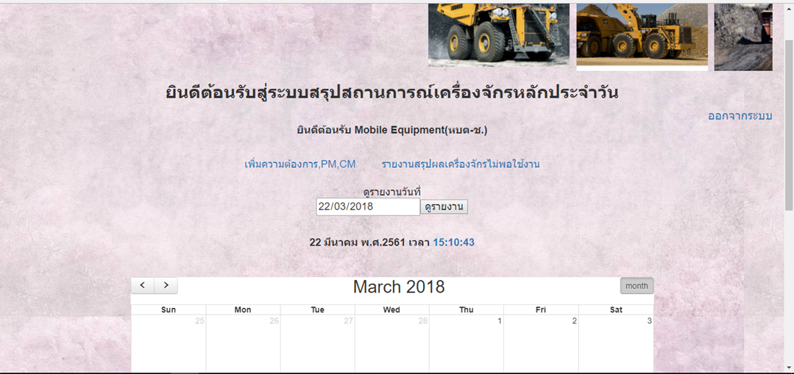
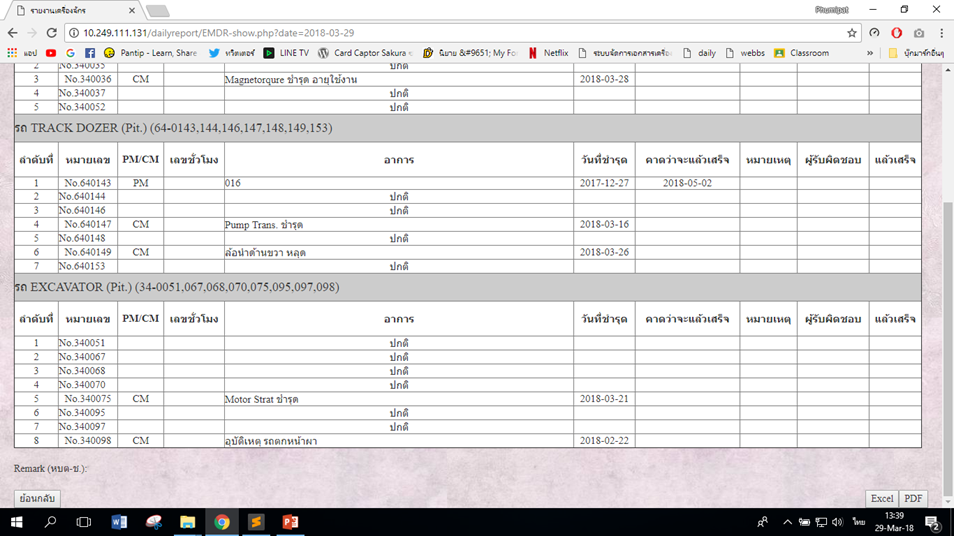

วิธีการดูรายงานเครื่องจักรรายวัน

1.สามารถดูรายงานการบันทึกในวันที่ต้องการได้ในหน้าหลัก และเลือกที่ "ดูรายงาน"

2.แถมเมนูจะอูยู่ริมขวาสุดของหน้าสุดท้าย สามารถทำการบันทึกข้อมูลออกมาได้ทั้งไฟล์ PDF และ Excel เพื่อดาวน์โหลดเก็บไว้ส่วนตัวได้อีกด้วย